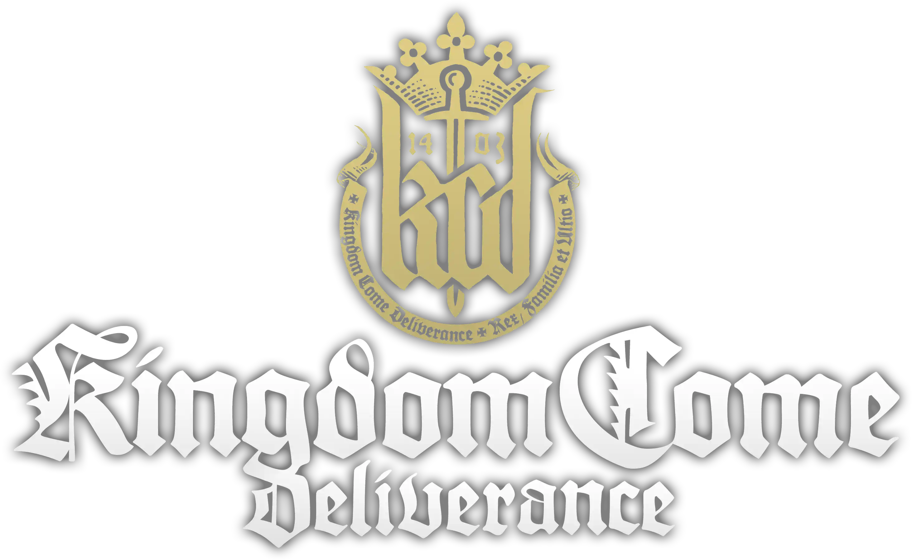

WARHORSE STUDIOS · RPG MEDIEVAL DE MUNDO ABERTO · 1403, BOÊMIA

GUIA DE PLATINA PT-BR
TEM PLATINA
83 TROFÉUS
12 PERDÍVEIS
5/10 DIFICULDADE
Sim
Tem Platina
83
Total de Troféus
4
Ouro
21
Prata
57
Bronze
120-150h
Tempo Casual
60-80h
Tempo Otimizado
1
Playthroughs Mínimos
90+
Cruzeiros/Cruzes (Peregrino)
~4%
Jogadores Platinaram
DIFICULDADE ESTIMADA
1 TRIVIAL
5/10 — LONGA E MINUCIOSA
10 BRUTAL
Nenhum troféu isolado é mecanicamente difícil, mas o jogo é gigantesco e realista
demais: você precisa comer, dormir, consertar equipamento e lidar com falas de diálogo complexas.
A dificuldade real está em não estragar os perdíveis ao longo de uma
campanha de 50h+ de história, e em ter paciência para as tarefas repetitivas (10.000 ervas, 50km a pé,
200 mortes). Combate é simples de dominar com socos/porretes; mira de arco para os headshots é o ponto
mais frustrante da lista.
🏰 ESTRATÉGIA GERAL PARA A PLATINA
É totalmente possível platinar em 1 único playthrough. A recomendação é:
jogue a história inteira sendo pacifista, casto e educado (para não perder Misericordioso, Virgem e Rei
Encantador), complete side quests assim que aparecerem (para Completista), e deixe os troféus de combate,
coleta e grind (mortes, headshots, ervas, distância percorrida) para depois de terminar a campanha. O jogo
mantém um autosave no início de cada missão — a maioria dos perdíveis "pontuais" pode ser recuperada
recarregando essa missão específica, sem precisar reiniciar tudo.
⚠️ CLASSIFICAÇÃO OURO/PRATA/BRONZE DOS DLCs — PARCIALMENTE ESTIMADA
A contagem total (83 · 1 Platina · 4 Ouro · 21 Prata · 57 Bronze) é confirmada em
fontes oficiais (Exophase / TrueTrophies). Nomes e descrições também são fiéis ao conteúdo oficial (traduzidos
para PT-BR). Porém, a classificação individual de Ouro/Prata/Bronze de alguns troféus das
expansões (From the Ashes, Amorous Adventures, Band of Bastards, A Woman's Lot) foi reconstruída para
bater com os totais oficiais confirmados, já que essas listagens específicas não estão publicamente
detalhadas troféu a troféu. Confirme no Exophase/PSNProfiles antes de usar isso como fonte definitiva de qual
medalha é qual.
🔗 FONTES PARA VERIFICAR
▸ Exophase — Troféus Oficiais: exophase.com/game/kingdom-come-deliverance-psn/trophies/
▸ PowerPyx — Guia e Roadmap: powerpyx.com/kingdom-come-deliverance-trophy-guide-roadmap/
▸ PSNProfiles — Guia e Lista: psnprofiles.com/trophies/7215-kingdom-come-deliverance
▸ TrueTrophies — Lista Completa: truetrophies.com/game/Kingdom-Come-Deliverance/trophies
Roteiro otimizado em 3 fases, pensado para 1 único playthrough. A ordem é flexível dentro
de cada fase, mas respeite a ordem entre as fases — combate letal e promiscuidade só devem
entrar depois que os troféus perdíveis da Fase 1 estiverem garantidos.
Os 13 troféus realmente perdíveis do jogo (12 do jogo base + 1 do DLC From
the Ashes), organizados na ordem provável em que aparecem durante a campanha — clique em cada um pra abrir
o passo a passo detalhado. Misericordioso e Virgem
exigem atenção do primeiro ao último minuto; os demais têm uma janela específica (geralmente uma missão
só) e, se você errar, dá pra recarregar o autosave do início daquela missão pra tentar de novo.
Duas seções aqui: primeiro, dicas gerais pra sobreviver às primeiras horas sem sofrer tanto quanto a
comunidade sofreu; depois, as dicas específicas pra facilitar a caça de troféus. As duas se complementam,
mas servem propósitos diferentes.
🎓 PRIMEIRAS HORAS — SOBREVIVENDO À BOÊMIA
🗣Fale antes de lutar
Isso não é Skyrim: combate no início do jogo é brutalmente punitivo, e Henry começa sem saber empunhar
nada direito. Sempre que der, resolva pela conversa — você tem três "armas" sociais diferentes:
intimidação (sobe se você anda sujo, ensanguentado e de armadura pesada),
charme (sobe limpo, bem vestido, descansado e sóbrio) e reputação
(constrói com o tempo ajudando a região). Guarde a espada pra quando não tiver saída.
💾Como salvar o jogo
Não existe "salvar rápido" livre aqui. Você tem 3 formas: save automático (acontece
sozinho em pontos-chave de missões, geralmente antes de algo perigoso), dormir numa cama
que seja sua ou alugada, ou beber uma dose de Vinho da Salvação (Saviour Schnapps) —
item comprável ou fabricável em Alquimia, único jeito de salvar manualmente em qualquer lugar/hora.
Antes de fazer algo arriscado (invadir, roubar, brigar), garanta que tem uma dessas três opções à mão.
🧼Cuide de Henry como gente de verdade
Fome, sono e higiene não são só barrinhas de status: comida de qualidade sustenta mais tempo que um pedaço
de pão velho, dormir numa cama de verdade rende mais que palha no chão, e um banho na casa de banho vale
muito mais que um mergulho num rio gelado. Isso tudo afeta diretamente o Carisma (aba Equipamentos) e a
disposição de Henry no dia a dia — negligenciar isso cedo demais custa caro depois.
🎯Não existe build errada — quase tudo treina alguma coisa
Colher erva sobe Herbalismo, beber sobe Bebida, ler sobe Leitura — praticamente qualquer ação vira XP em
algo. Não tem problema variar bastante nas primeiras horas pra descobrir o que você gosta antes de focar.
Detalhes completos de perícias/perks e arquétipos de build prontos estão nas abas Habilidades & Perks e
Combate & Builds.
⚖Moralidade tem peso de verdade
Diferente de outros RPGs onde dá pra fazer qualquer missão sem consequência, aqui os NPCs reagem ao que
Henry anda fazendo — envolver-se com gente de má fama fecha portas com gente de boa fama, e vice-versa.
Já no primeiro dia em Rattay você recebe um convite pra jogar lama na casa de alguém: pense antes de
aceitar qualquer coisa assim. Detalhes completos do sistema estão na aba Reputação.
✅5 coisas pra fazer / evitar logo no início
Faça: fale com todo mundo (diálogo sobe Fala de graça); visite o escriba
assim que puder pra aprender a ler; guarde um pouco de dinheiro em vez de gastar tudo em equipamento caro
cedo; explore ao lado das missões principais, não só nelas; confira o inventário/atributos com calma pra
entender o que cada perk faz antes de escolher.
Evite: brigar com grupo de bandidos ou soldados de armadura pesada nas primeiras horas; roubar sendo visto sem plano de fuga; gastar toda a grana num equipamento único; ignorar fome/sono até render um debuff; e tentar "zerar" uma perícia grindando artificialmente antes de aprender a mecânica de verdade — a curva de aprendizado é parte do jogo.
Evite: brigar com grupo de bandidos ou soldados de armadura pesada nas primeiras horas; roubar sendo visto sem plano de fuga; gastar toda a grana num equipamento único; ignorar fome/sono até render um debuff; e tentar "zerar" uma perícia grindando artificialmente antes de aprender a mecânica de verdade — a curva de aprendizado é parte do jogo.
🏆 DICAS FOCADAS EM TROFÉUS
🗣Retórica é a melhor habilidade do jogo
Escolha Retórica como habilidade inicial (dois níveis de bônus imediato). Sempre esgote os diálogos com
NPCs e sempre pechinche com mercadores — isso sobe Retórica organicamente. Retórica alta permite fugir de
combates inteiros por conversa, o que ajuda demais em Misericordioso e Rei
Encantador.
👊Combate não-letal
Para Misericordioso, use apenas punhos nus ou armas contundentes (porrete).
Confira o tipo de dano da arma (dano contundente não mata, corte/perfuração sim). Golpes furtivos por trás
nocauteiam em vez de matar e também contam para Assassino Furtivo.
⏳Use o "Aguardar" (Touchpad/menu), não a cama
Para troféus de tempo/nutrição (Insone, Empanturrado, Anoréxico, Alcoólatra), use a função de Aguardar
em vez de dormir em camas. Dormir cria um save automático a cada avanço de tempo; Aguardar não cria save,
então depois de pegar o troféu você pode recarregar o último save e recuperar comida/dinheiro gastos.
📖Aprenda a ler cedo (mas não rápido demais)
A missão secundária "Mais Forte que a Espada" ensina Henry a ler. Faça-a assim que possível para destravar
Rato de Biblioteca e ajudar em Bardo (livros aumentam Retórica). Porém, se
for pegar as expansões, não aprenda a ler antes de reconstruir Pribyslavitz —
"Tentativa e Erro" exige reconstruir tudo sem saber ler.
🎯Farme combos e headshots em locais fixos
Para Lutador, treine combos de espada com o Capitão Bernard na Arena de Combate de Rattay —
muito mais rápido do que brigar com bandidos. Para Atirador de Elite, ataque acampamentos
de bandidos à noite quando estão dormindo, ou espere-os se aproximar até 1 metro de distância antes de
mirar na cabeça.
💰Tesouros escondidos aceleram tudo
Existem baús de tesouro com mapas espalhados pelo mundo que rendem milhares de Groschen rapidamente —
essenciais para Avarento (5.000 Groschen guardados), Regateador (2.000
economizados pechinchando) e para comprar receitas de alquimia caras para Edward Kelly.
Consulte um guia de localizações de tesouro à parte se quiser acelerar a economia.
🌿Ervas e o "Peregrino" rendem com paciência
Colher 10.000 ervas fica muito mais rápido conforme a habilidade de Herbalismo sobe (você coleta várias por
toque). Para Peregrino, percorra estradas e trilhas de floresta a cavalo com atenção — os
cruzeiros e cruzes votivas costumam ficar à beira do caminho, e é preciso interagir com
eles, não só descobri-los no mapa.
Lista completa dos 83 troféus, organizados por jogo base e por DLC. Nomes e descrições traduzidos para
PT-BR a partir do conteúdo oficial. Troféus perdíveis aparecem destacados com a etiqueta
PERDÍVEL.
▲
▼
100%
Esta página cobre só secundárias e atividades — as missões principais
(as ~29 que carregam a história de Henry) não entram aqui, porque são óbvias e lineares por natureza.
O que você vê abaixo são as ~95 secundárias e atividades do jogo, organizadas
na ordem provável em que ficam disponíveis durante a campanha, do início ao fim — e depois as expansões
(DLC), que rodam em paralelo à história principal.
⚠ Sobre a ordem abaixo
Cruzei o wiki.gg (lista oficial completa), o powerpyx.com e o techradar.com (que confirmam o gatilho
exato de várias secundárias específicas, tipo "fale com Fulano depois da missão X"). Pra quem não tinha
gatilho confirmado numa fonte, posicionei pela região/NPC/contexto da própria descrição da missão — é uma
ordem de melhor esforço, não um cronômetro exato quadro a quadro. O jogo é bem não-linear
e várias secundárias ficam disponíveis em paralelo por um bom tempo.
Sete missões jogáveis como Theresa no DLC A Woman's Lot (Bonum Commune, Cry Wolf!, Matchmaker, Casting Lots, Go and Sin No More, Infernal Dream, The Wicket Gate) não tinham descrição detalhada nem na wiki oficial (marcada como incompleta por lá também) — pra essas, fui honesto na descrição em vez de inventar detalhe de enredo que eu não pude confirmar.
Sete missões jogáveis como Theresa no DLC A Woman's Lot (Bonum Commune, Cry Wolf!, Matchmaker, Casting Lots, Go and Sin No More, Infernal Dream, The Wicket Gate) não tinham descrição detalhada nem na wiki oficial (marcada como incompleta por lá também) — pra essas, fui honesto na descrição em vez de inventar detalhe de enredo que eu não pude confirmar.
🏆 TROFÉUS QUE SAEM DE SECUNDÁRIA/ATIVIDADE
- Cavaleiro Noturno — corrida de cavalos de Talmberg.
- McLovin — "Cortejo" (Theresa).
- Casanova (perdível) — "A Seu Serviço, Minha Dama" (Lady Stephanie).
- Judas — "Irmãos da Forca".
- Mestre Caçador — corrente "Cherchez la Femme" / "Caça à Lebre".
- Barão Ladrão — quest "Barão Ladrão".
- Estraga-Prazeres — "Dinheiro por Corda Velha".
- Viagem Ruim — "Brincando com o Diabo".
- Médico da Peste (perdível) — "Pestilência".
- Mestre da Arena — atividade Torneio de Rattay (DLC Tournament).
- Praticamente todos os troféus dos DLCs From the Ashes, Band of Bastards, Amorous Adventures e A Woman's Lot — essas expansões são inteiramente feitas de secundárias/atividades, sem "missão principal" própria de Henry.
📋 CATÁLOGO — SECUNDÁRIAS E ATIVIDADES, EM ORDEM
Nota rápida antes de começar: também não achei uma página em PT-BR dedicada a "minijogos" do KCD1 — a
maioria do que existe em português foca no KCD2, que realmente tem muito mais minijogo
(ferraria, arco, etc). No jogo base (KCD1), só existem 4 mecânicas com interface própria
que merecem ser chamadas de minijogo de verdade: Dados (Farkle), Alquimia,
Arrombamento e Punga (bater carteira). Usei as wikis em inglês do jogo
base + discussões da comunidade Steam pra montar isso, e vou avisar sempre que uma informação for "relato
de jogador" em vez de dado oficial confirmado.
🎲 DADOS (FARKLE)
🎲Como funciona
Jogo de 2 jogadores, disponível em qualquer taverna respeitável. Henry sempre joga primeiro. Na sua vez,
jogue os 6 dados, separe pelo menos 1 dado que pontue, e escolha: parar (guarda os
pontos e passa a vez) ou continuar (rejoga os dados restantes, arriscando tudo). Se uma
rolada não render nenhum dado que pontue, você perde todos os pontos daquela rodada e a
vez passa pro adversário. Se separar os 6 dados sem "zebrar", ganha uma rodada extra com os 6 de volta.
Vence quem chegar primeiro à pontuação alvo (geralmente 4.000).
100
Um "1" avulso
50
Um "5" avulso
Nx100
Trinca de N (ex: três 4 = 400)
1000
Trinca de "1" (exceção)
🎲 Dados especiais (relato da comunidade, não é dado oficial)
Dados "carregados" achados em baús, ganhos de mendigos (evento aleatório "Viajante") ou como recompensa
de quest (ex: "Next to Godliness") mudam a probabilidade de certos números. Jogadores relatam:
- Lu, Ci e Fer ("dados demoníacos" — a junção soletra "Lu-ci-fer") — tendem mais pro número 6.
- Dado Ímpar / Par — tendem mais pros números ímpares (1,3,5) ou pares (2,4,6).
- Santíssima Trindade — tende mais pro número 3.
- Dado da Sorte — tende mais pro 1 ou 6.
- Dado Beta de Henry — escondido num baú trancado na casa de Henry em Skalitz, bem no início do jogo; é mais um item de coleção/lore do que vantagem prática.
🏆 Troféus ligados: Apostador (ganhe 1.000 Groschen jogando dados) e Posso Parar Quando Quiser (vença o torneio de dados do DLC Amorous Adventures).
🧪 ALQUIMIA (PREPARO DE POÇÕES)
1Base
Toda receita começa despejando uma base no caldeirão — água, vinho, destilado ou óleo, encontrados na prateleira à esquerda da bancada.
2Ingredientes
Adicione as ervas exigidas pela receita. Algumas precisam ser trituradas no pilão antes, ou passadas pelo destilador (também na bancada).
3Fervura controlada
Use o fole (tecla Q por padrão) pra acender/manter o fogo, e a ampulheta (tecla F) pra contar os "turnos" de fervura pedidos pela receita — cada vez que a ampulheta esvazia conta como 1 turno.
4Engarrafar
Pegue um frasco vazio da prateleira e use-o no caldeirão pronto. Se não errou nenhum passo, o jogo mostra o nome da poção certa.
💡 Como subir Alquimia rápido
Estas 4 receitas são simples e toleram erro de execução sem estragar o resultado — ótimas pra treinar:
- Poção Digestiva: destilado + 2 Camomila + 1 Hortelã.
- Veneno: óleo + 2 Erva-de-Paris + 1 Cardo.
- Elixir do Arqueiro: destilado + 2 Eufrásia + 1 Erva-de-São-João.
- Decocção de Malmequer: água + 2 Malmequer + 1 Urtiga.
Sem saber ler, Henry não consegue seguir a receita escrita direito — por isso Alquimia é considerada uma das perícias mais difíceis de destravar bem cedo no jogo. Vale aprender a ler primeiro (aba Livros & Leitura).
🏆 Troféu ligado: Edward Kelly — prepare quinze tipos diferentes de poção.
🔓 ARROMBAMENTO (LOCKPICKING)
🔓Como funciona
Ao selecionar uma fechadura trancada, aparece uma roda com um marcador cinza girando por ela. Mova o
marcador até ele crescer e ficar dourado — esse é o "ponto fraco" da fechadura. Mantenha o marcador ali
enquanto gira a chave de gazua. Quanto mais difícil a fechadura, menor o ponto fraco e mais forte o
"tremor" da mira, dificultando manter o alinhamento. Errar o alinhamento durante o giro quebra a gazua.
A perícia de Arrombamento reduz o tremor e aumenta o tamanho do ponto fraco, além de destravar
fechaduras mais difíceis. Leve sempre várias gazuas reservas — elas quebram com facilidade no começo, e
cada tentativa falha em fechadura trancada também pode ser percebida por guardas por perto.
Veja a aba Livros & Leitura pra série de livros de perícia "Quem Precisa de Chave?" que acelera o progresso.
✋ PUNGA (BATER CARTEIRA)
1Aproximação
Agache e se aproxime do alvo por trás (fora do campo de visão dele) — ou aborde diretamente se o alvo estiver dormindo. Um aviso aparece perguntando se quer revistar o bolso.
2Carregar o tempo
Segure o botão de furto pra "carregar" quanto tempo você vai ter pra vasculhar o bolso — quanto mais segura, mais tempo ganha, mas também mais risco de ser flagrado. Carregar de menos (1-2 segundos) costuma flagrar Henry na hora; a comunidade recomenda mirar uns 10 segundos de carga como equilíbrio.
3Escolher o que roubar
Solte o botão e aparece um menu circular com os itens do alvo. Mova o cursor até um item marcado e confirme pra roubá-lo — cada item roubado consome parte do tempo que sobrou. Pegue os itens de mais valor primeiro e pare antes do tempo zerar.
🏆 Troféu ligado (mais amplo, cobre furto em geral): Ladrão — roube itens no valor total de 30.000 Groschen (soma furto de bolso + roubo de casas/baús).
🔗 FONTES CONSULTADAS
▸ Kingdom Come: Deliverance Wiki (Fandom) — /wiki/Farkle, /wiki/Codex_entry:_Dice, /wiki/Lockpicking
▸ Kingdom Come: Deliverance Wiki Archive (Fandom) — /wiki/Dice
▸ Kingdom Come: Deliverance Wiki (wiki.gg) — /wiki/Dice, /wiki/Alchemy
▸ gamepressure.com — dice-minigame, alchemy
▸ gamerant.com — how-to-pickpocket-without-getting-caught
▸ Steam Community (várias discussões sobre dados especiais e alquimia)
Bohemia não dá pontos de talento de graça: Henry nasceu um filho de ferreiro sem jeito pra espada nem pras
letras, e tudo que ele aprende vem de fazer — brigar sobe Força, ler sobe Leitura, regatear
sobe Fala. É um sistema sem classes: em vez de escolher "Guerreiro" ou "Ladino" na criação de personagem,
você vai virando um ou outro (ou os dois) só pelo que decide fazer no mundo. Esta seção explica como esse
motor de progressão funciona por baixo do capô e reúne os perks mais úteis, mais pedidos
pela comunidade e mais escondidos do jogo base.
21
Trilhas de Progressão
20
Nível Máx. por Trilha
7
Perícias de Combate
10
Perícias Não-Combate
4
Atributos Principais
a cada 2
Níveis por Ponto de Perk*
⚙ COMO FUNCIONA A EVOLUÇÃO DE HENRY
- Nível Principal — um "nível geral" que sobe conforme suas trilhas individuais sobem e você avança na história. Ele não tem uma perícia própria pra treinar: é reflexo de tudo o resto.
- 4 Atributos — Força, Agilidade, Vitalidade e Fala. Sobem com o uso (lutar, se esquivar, correr/pular, conversar) e também liberam perks próprios.
- 17 Perícias — 7 de combate (uma por tipo de arma + Combate e Defesa) e 10 fora de combate (Furtividade, Alquimia, Caça, Herbalismo, Leitura, Equitação, Manutenção, Arrombamento, Roubo e Bebida), todas de 0 a 20.
- Regra geral dos perks — a cada certo número de níveis (na maioria das trilhas, a cada dois) você ganha um ponto pra escolher um perk daquela trilha. Mas o intervalo varia por trilha: Leitura libera perk nos níveis 3, 5, 7, 9, 12, 14, 16, 18 e 20, enquanto Equitação libera nos níveis 4, 7, 10, 14, 17 e 20 — por isso o "a cada 2" do card acima é só a régua mais comum, não uma regra fixa.
- Sidegrades — muitos perks (principalmente do Nível Principal) dão um bônus real acompanhado de uma desvantagem de verdade — ex.: mais Carisma trocando por menos Força. Vale ler a descrição inteira antes de confirmar.
- Dá pra desfazer — a escolha de perk não é 100% definitiva: a poção Água de Letes (Lethean Water), coberta na aba Alquimia & Crafting, reseta todos os pontos de perk já gastos (sem perder o nível da perícia em si) pra você escolher tudo de novo.
- Machado, Espada e Maça não ganham perks passivos como as outras trilhas — em vez disso, cada nível liberado ensina uma combinação de combos nova pra surpreender o oponente. Arco e Luta Desarmada não têm especializações no jogo base.
🗣A primeira escolha do jogo — as perguntas da mãe
Antes mesmo do tutorial começar, a mãe de Henry pergunta onde ele estava na noite anterior. Cada uma das
respostas dá +1 permanente em um atributo diferente — Fala, Agilidade, Vitalidade ou
Força — então vale escolher pensando no estilo que você quer jogar (quem quer menos combate e mais
diálogo, por exemplo, sai na frente escolhendo Fala aqui). Não é uma decisão travada: é só um empurrão
inicial, e todos os atributos continuam subindo normalmente depois disso pelo resto do jogo.
💪 OS 4 ATRIBUTOS PRINCIPAIS
💪Força
Poder físico bruto: mais dano com armas pesadas, menos Stamina gasta nelas, mais peso carregável e corrida mais rápida com sobrepeso. Sobe lutando (principalmente com armas de Força) e — como já visto na aba Herbologia & Caça — colhendo ervas com a perk Leg Day.
🤸Agilidade
Rapidez e finesse: melhora esquiva, o uso de armas leves/sofisticadas (como sabres) e a pontaria com arco. Sobe com combate ágil, arco e atividades como pular obstáculos repetidamente.
❤️Vitalidade
Sua reserva de Stamina e resistência geral. É, na prática, a mais fácil de treinar no early game: correr e pular repetidamente já sobe bastante, e sobreviver a combates também conta.
🗨Fala (Retórica)
Poder de persuasão, intimidação e regateio. É a mais lenta de treinar — só sobe escolhendo opções de diálogo "brancas" (persuasão de verdade) e com sucesso em negociações — mas também a mais decisiva pra evitar combate. O troféu Bardo (elevar a Retórica ao nível máximo) é uma boa meta de fim de jogo pra quem investiu nela.
ℹ Carisma não é um atributo treinável
Diferente dos quatro acima, Carisma não sobe com o uso — ele é calculado na hora, como a
média do valor de Carisma de cada peça de roupa/armadura visível que Henry está usando, descontado por
sujeira e sangue. Banhos, perfumes (Alquimia) e algumas perks pontuais (como Perfume e
Saville Row de Manutenção, ou Loose Tongue de Bebida) dão bônus fixos
por cima disso.
⚔ PERÍCIAS DE COMBATE (7)
▸ Combate — eficiência geral em ataques corpo a corpo
▸ Defesa — eficiência de bloqueio e aparo
▸ Espada — combos exclusivos, sem perks passivos
▸ Machado — combos exclusivos, sem perks passivos
▸ Maça (Streitkolben) — combos exclusivos, sem perks passivos
▸ Arco — a partir do nível 5, a corda para de bater no antebraço mesmo sem braçadeira
▸ Luta Desarmada — socos e chutes; sem especializações no jogo base
🌿 PERÍCIAS NÃO-COMBATE (10 + 1 DLC)
▸ Furtividade — esconder-se, mortes furtivas a partir do nível 5
▸ Alquimia — qualidade e velocidade no preparo de poções
▸ Caça — perks já detalhados na aba Herbologia & Caça
▸ Herbalismo — perks já detalhados na aba Herbologia & Caça
▸ Leitura — perks já detalhados na aba Livros & Leitura
▸ Equitação — controle e atributos do cavalo montado
▸ Manutenção — eficiência ao reparar armas/armaduras
▸ Arrombamento — gazuas quebram menos, fechaduras mais fáceis
▸ Roubo (Taschendiebstahl) — chance de furtar sem ser flagrado
▸ Bebida — resistência à embriaguez
▸ Adestrador (DLC A Woman's Lot) — habilidades da companheira Mutt
📋 CATÁLOGO DE PERKS — MAIS ÚTEIS E MAIS PEDIDOS
Seleção curada (não é a lista completa de +200 perks do jogo) com o que a comunidade mais recomenda em cada
trilha, priorizando o que muda o jogo de verdade. Perks de Herbalismo, Caça e Leitura ficam nas abas
dedicadas — aqui é só o restante.
🕵 PERKS OCULTOS E LIGADOS A MISSÕES
Nem todo perk vem de subir de nível
- Gamekeeper Rules the Woods — perk oculto de Caça, recompensa da missão secundária "Cherchez la Femme" (veja a aba Herbologia & Caça pro detalhe completo).
- Resistance — perk oculto de Herbalismo por colher ervas venenosas em quantidade (também detalhado na aba Herbologia & Caça).
- Primeiros Socorros I — embora tecnicamente libere no nível 3 do Nível Principal, alguns jogadores relatam que ele só fica disponível pra aprender depois de passar por certos pontos da história inicial — não conte só com o nível pra garantir que ele já esteja liberado.
- Relieved (Aliviado) — só existe com o DLC A Woman's Lot instalado, e exige completar a missão "The Wicket Gate" (confissão + peregrinação de penitência).
- Perks "de combate fácil" — a comunidade relata perks pontuais que tornam certos confrontos (como contra os Cumanos) trivialmente fáceis, quase como um one-hit-kill, mas a condição exata de desbloqueio nunca foi confirmada oficialmente nem documentada de forma consistente — trate como boato de comunidade, não como guia garantido.
🏆 TROFÉUS LIGADOS A HABILIDADES & PERKS
Vários troféus da aba Troféus nascem direto de subir perícia
- Nível Máximo — alcance o nível máximo do Nível Principal.
- Bardo — eleve a Retórica (Fala) ao nível máximo.
- Lutador — realize 100 combos em combate (perícias de arma).
- Atirador de Elite — mate 50 inimigos com tiros na cabeça (Arco).
- Assassino Furtivo — mate 20 inimigos furtivamente (Furtividade).
- Caçador e Mestre Caçador — ligados à perícia de Caça.
- Rato de Biblioteca — leia 20 livros (Leitura).
- Edward Kelly — prepare 15 tipos diferentes de poção (Alquimia).
- Ladrão — roube itens no valor total de 30.000 Groschen (Roubo).
- Regateador — economize 2.000 Groschen pechinchando (Fala).
- David Horak — colete 10.000 ervas (Herbalismo).
- Andarilho — caminhe mais de 50 km (bom subproduto de treinar Equitação/Vitalidade a pé e a cavalo).
- Mestre da Arena — DLC Torneio, ligado a Combate/Defesa/Armas.
- Alcoólatra, Insone, Empanturrado e Anoréxico — "efeitos colaterais" de brincar com Bebida, Vitalidade e as necessidades básicas de Henry.
🔗 FONTES CONSULTADAS
▸ Kingdom Come: Deliverance Wiki (Fandom) — /wiki/Perks, /wiki/Main_Level, /wiki/Skills_(KCD), /wiki/Horsemanship, /wiki/Hunting, /wiki/Burgher, /wiki/Ken, /wiki/Contemplative, /wiki/Ascetic, /wiki/Wanderer, /wiki/Relieved
▸ IGN Wikis — kingdom-come-deliverance/wiki/Skills
▸ TheGamer — kingdom-come-deliverance-best-perks, kingdom-come-deliverance-best-starting-traits
▸ Fextralife Wiki — kingdomcomedeliverance.wiki.fextralife.com/Perks, /Skills
▸ eip.gg — Character Development Guide (níveis de perk do Nível Principal)
▸ GameStar.de — Alle Skills und Fertigkeiten in der Übersicht (lista completa das 17 perícias base)
▸ Twinfinite / GamerGuides — as 4 perguntas iniciais da mãe de Henry
▸ Comunidade (Steam Community, Reddit) — discussões sobre melhores perks por trilha e perks ocultos/lendários
O combate de Kingdom Come não tem combo mágico nem barra de "finisher": é um sistema de timing e
posicionamento em cima de uma roda de 5 direções, onde ler o ombro do adversário vale mais que
decorar botões. Bohemia avisa: você vai apanhar muito no começo — e é exatamente assim que deveria ser.
Esta seção reúne a mecânica pura (o "como funciona"), as armas disponíveis e arquétipos de build testados
pela comunidade, sempre puxando os perks certos da aba Habilidades & Perks em vez de repeti-los aqui.
5
Direções na Roda de Combate
3
Formas de Defesa
7
Perícias de Arma
Espada Longa / Lança
Melhores a Cavalo
🎯 A RODA DE COMBATE — O BÁSICO
- Ataque forte (clique esquerdo) — golpe lento e pesado; corte com arma, soco/gancho desarmado.
- Ataque rápido (clique direito) — golpe fraco e veloz; estocada com a ponta da lâmina, jab desarmado.
- Movimento do mouse/analógico escolhe a direção do golpe na roda (5 zonas). Uma zona acinzentada não pode ser atacada naquele instante.
- Travar no alvo (Tab) fixa a câmera num oponente; pressione de novo pra alternar entre vários inimigos.
- Chute (F) empurra o oponente pra trás e pode quebrar a guarda dele.
- Clinch — encoste no oponente e mantenha o botão de ataque especial pressionado; vencer o clinch te dá espaço e, historicamente, um golpe livre em seguida (a versão "hit garantido" foi suavizada em patches, mas ainda vale a pena arriscar).
A defesa não depende da direção que você escolheu pra atacar — Henry sempre bloqueia o que vem da frente, independente de pra onde sua arma está apontando no momento.
🛡 BLOQUEIO, PERFECT BLOCK E MASTER STRIKE
🛡Bloqueio normal
Segure o botão de bloqueio a qualquer momento pra reduzir o dano de um golpe frontal. Gasta Stamina a cada impacto absorvido — contra inimigos fracos, um único ataque forte bloqueado já pode zerar a Stamina deles.
🟢Perfect Block (Aparo)
Espere o "escudo verde" aparecer no meio da roda de combate (fase 2 do golpe inimigo) e pressione bloqueio nesse instante. O jogo desacelera por uma fração de segundo e Henry desvia a arma do oponente, abrindo espaço pra um contra-ataque (Riposte) — que só falha se o inimigo também acertar um Perfect Block ou Master Strike contra ele.
⚡Master Strike
Um perk oculto liberado ao treinar com o Capitão Bernard. Em vez de esperar o escudo verde do Perfect Block, você pressiona bloqueio um instante antes — na fase 1 do golpe, observando o ombro do braço da arma do adversário começar a se mover. Acertar o timing dispara uma sequência automática de contra-ataques que não pode ser bloqueada nem interrompida. A janela pra isso é bem mais curta quanto maior o nível de arma do oponente for em relação ao seu — contra alguém muito mais experiente, o Master Strike vira quase impossível de puxar.
ℹ Como escapar de um Master Strike inimigo
A maioria dos NPCs de combate também sabe puxar Master Strike contra você, e é aí que o jogo fica punitivo. Três formas de reduzir o risco: usar feintes (segure o botão de carregar golpe e mude de direção rápido pra confundir a guarda do oponente); atacar só uma ou duas vezes por sequência em vez de encadear tudo; e abusar do clinch pra desestabilizar o inimigo antes de golpear. A comunidade também reporta um pequeno recuo (dodge pra trás) possível bem no início da janela do Master Strike inimigo, mas a margem de erro é curta.
🔗 COMBOS
- Cada arma (Espada, Machado e Maça) libera combinações de combo conforme sua perícia daquela arma sobe — não são perks passivos, são sequências de golpe específicas (2 a 4 hits) que você precisa decorar e executar na ordem certa.
- O golpe final de um combo é imbloqueável — se o inimigo perceber o padrão, a defesa dele é recuar pra fora de alcance antes do último hit, não tentar bloquear.
- Arco e Luta Desarmada não têm combos/especializações no jogo base.
- O Capitão Bernard ensina uma combinação específica durante o treinamento — é a mesma usada, por exemplo, no evento contra o Runt.
🗡 ARMAS CORPO A CORPO
▸ Espada Longa — maior variedade de combos do jogo; usável com uma ou duas mãos, escala com Força e Agilidade; referência da comunidade como melhor arma "geral"
▸ Machado — bom dano contra alvos desarmados, mais lento contra armadura pesada
▸ Maça (Streitkolben) — ótima contra armadura de placas, ignora parte da proteção por impacto
▸ Sabre curto (Shortsword) — escala com Agilidade, rápido, bom pra builds ágeis/leves
▸ Arco — sem mira assistida; flechas caem bastante em nível baixo e cada vez menos conforme a perícia sobe; a única forma "segura" de dano à distância
▸ Luta Desarmada — socos e chutes; útil no início e em brigas de taverna, mas perde força contra armadura
▸ Lanças e Bordões (armas de inimigos caídos) — só podem ser usadas enquanto empunhadas — não vão pro inventário; bloqueiam mas não fazem Perfect Block nem Master Strike, e não permitem esquiva enquanto seguradas
🐴 COMBATE MONTADO
- Espadas longas e lanças/armas de haste são as melhores em cima do cavalo por causa do alcance maior.
- Tática clássica: acerte um golpe a meio-galope, afaste-se pra recarregar Stamina/distância, dê a volta e repita — funciona muito bem em estrada aberta ou campo.
- Nunca fique parado montado durante um combate: um oponente pode te desmontar, deixando Henry exposto no chão.
- Atropelar inimigos a galope também causa dano — quanto mais rápido o cavalo, mais forte o impacto (a perk Cavalo de Corrida, de Equitação, ajuda bastante aqui).
- Arco a cavalo é notoriamente difícil — pratique em espantalhos antes de tentar contra inimigos de verdade.
🧭 ARQUÉTIPOS DE BUILD
Kingdom Come não trava Henry em uma classe — dá pra alternar de armadura pesada pra kit furtivo no mesmo
save sem perder progresso. Os "builds" abaixo são combinações de perícias e perks (todos detalhados na aba
Habilidades & Perks) que a comunidade mais recomenda pra cada estilo de jogo.
🛡Cavaleiro Blindado (Tanque)
Foco em Força, Defesa e Espada Longa (ou Machado/Maça), armadura pesada de placas. Perks-chave: Fortaleza, Mestre do Clinch, Aperto Firme, Golem e o grupo de nível principal Brute (Força+Força, penalidade leve em Fala/Carisma). Bom pra quem quer resolver tudo na porrada e não se importa de ser visto/ouvido chegando.
🐴Cavaleiro Montado
Mesma base do Cavaleiro Blindado, mas investindo pesado em Equitação. Perks-chave: Cavaleiro (Knight, +15% dano montado), Cavalo de Corrida, Montaria Amedrontada, Coxas Fortes. Arma recomendada: Espada Longa. Ótimo contra grupos grandes de bandidos/Cumanos em campo aberto, onde combate a pé viraria uma emboscada.
🗡Furtivo / Assassino
Furtividade, Roubo e Arrombamento na frente, armadura leve e escura. Perks-chave: Morte Furtiva (nível 5 de Furtividade), o grupo de nível principal Cloak and Dagger (+2 Furtividade, -1 Força/Fala) e o combo de Manutenção pra reduzir ruído da armadura. Uma poção de veneno na lâmina resolve o que a lâmina sozinha não mata de primeira.
🗣Diplomata / Fala
Prioriza Fala acima de tudo — é a perícia mais lenta de subir, então vale escolher o bônus de Fala já na conversa inicial com a mãe de Henry. Perks-chave: o grupo de nível principal Golden Tongue (+2 Fala, -2 Força) e Oferta Final pra regatear. Reduz drasticamente a necessidade de brigar, já que muita missão se resolve só na lábia.
🏹Arqueiro Furtivo
Combina Arco, Furtividade, Manutenção e Alquimia. Arma principal: Arco (dano à distância "seguro"); arma secundária leve tipo Sabre Curto pra emergência corpo a corpo. Poções de Alquimia (mira, força, resistência) fazem muita diferença aqui. Funciona bem tanto a pé quanto a cavalo, embora arco montado exija bastante prática.
⚖Híbrido
A maioria dos jogadores experientes não trava numa build só: mantém um kit furtivo guardado no cavalo pra emboscadas, alterna pra armadura pesada quando o combate é inevitável e sobe Fala aos poucos pra evitar brigas desnecessárias. Como não existe sistema de classe nem respeito real, migrar de estilo no mesmo save não tem custo além do tempo de treino.
🏆 TROFÉUS LIGADOS A COMBATE & BUILDS
Da porrada de rua ao torneio do DLC
- Lutador — realize 100 combos em combate.
- Atirador de Elite — 50 tiros na cabeça com arco.
- Assassino Furtivo — 20 mortes furtivas.
- Mestre da Arena — DLC Torneio, exige domínio de combate corpo a corpo em regras de duelo.
- Nível Máximo — indiretamente ligado, já que Força/Agilidade/Defesa/armas puxam boa parte do Nível Principal pra cima.
Detalhes completos de cada troféu ficam na aba Troféus; aqui é só o recorte que tem a ver com combate.
🔗 FONTES CONSULTADAS
▸ Kingdom Come: Deliverance Wiki (Fandom/wiki.gg) — /wiki/Combat, /wiki/Codex_entry:_Basic_Combat, /wiki/Master_Strike, /wiki/Horsemanship, /wiki/Polearms, /wiki/Main_Level
▸ Fórum oficial (forum.kingdomcomerpg.com) — "My guide to combat"
▸ Polygon — combat-combos-captain-bernard-combos-training-practice
▸ Fextralife Wiki — kingdom-come-deliverance-weapons-combat-guide
▸ PCGamesN — kingdom-come-deliverance-builds-perks-rpg-guide
▸ GamerGuides — character-development/build-options/overview
▸ opboostbuilds.com — Kingdom Come: Deliverance builds
▸ Comunidade (Steam Community) — discussões sobre Master Strike, clinch, combos e builds recomendadas
Esqueça "conjunto de armadura" como item único: em Kingdom Come, Henry se veste em camadas,
peça por peça, igual um sujeito medieval de verdade se vestiria — cueca e camisa por baixo, cota de malha
no meio, placa por cima, e ainda escolhe capa, luvas e sapato à parte. Essa seção explica o sistema de
20 slots, como ler os números de cada peça, os tipos de arma disponíveis e quando vale a pena comprar,
pilhar ou simplesmente esperar a história te dar coisa melhor.
20
Slots de Equipamento
8
Tipos de Arma Corpo a Corpo
4
Tipos de Kit de Reparo
8
Atributos por Peça de Armadura
🧥 O SISTEMA DE CAMADAS — 20 SLOTS
- Cabeça (4 slots) — Capacete, Coifa/Capuz de tecido, Cota de malha de cabeça e Colar/capa.
- Mãos e armas (6 slots) — Escudo, Arma corpo a corpo, Arco, Flechas/virotes e 2 slots de anel.
- Torso (6 slots) — Capuz/gorjal, Peitoral (placa ou brigantina), Camisa/gambeson, Sobreveste/tabardo, Manoplas e proteção de braço.
- Pernas (4 slots) — Cuxote, Joelheira, Caneleira e Calçado.
Nem toda peça de um slot combina com qualquer peça de outro do mesmo grupo — cota de malha e acolchoado de perna, por exemplo, ocupam o mesmo slot flexível, então é ou um ou outro, nunca os dois ao mesmo tempo.
📊 LENDO OS NÚMEROS DE UMA PEÇA
- Perfuração / Corte / Impacto — o quanto a peça resiste a cada tipo de dano (flecha e estocada usam Perfuração; golpes de corte usam Corte; maças/socos usam Impacto).
- Visibilidade — o quão fácil é te enxergar à distância. Cores claras/vivas aumentam; roupas escuras reduzem.
- Notoriedade (Conspicuousness) — o quanto a peça chama atenção por ser vistosa/de nobre (armadura de placas cheia de brasão notoriamente chama mais atenção que um gibão surrado).
- Ruído — o barulho que a peça faz ao se mover; metal e couro rígido são os piores infratores pra quem quer ser furtivo.
- Carisma — bônus/penalidade de Carisma daquela peça específica (lembrando que o Carisma total de Henry é a média de tudo que está vestido, como já visto na aba Habilidades & Perks). Só conta o que fica visível: um anel some do cálculo se você estiver de luva por cima, e um peitoral bonito de nada adianta se uma sobreveste/casaco cobrir ele — vale a pena conferir o preview de stats do jogo antes de presumir que uma peça cara está "funcionando".
- Durabilidade — o quanto a peça aguenta de uso antes de precisar de reparo pesado.
🧵Tecido / Gambeson (acolchoado)
Leve, silencioso, baratíssimo. Péssimo contra corte e perfuração, mas absorve bem impacto — por isso funciona tão bem como camada interna por baixo de malha ou placa: cobre exatamente a fraqueza das outras duas.
⛓Cota de Malha
Excelente contra corte, mas historicamente (e no jogo) vulnerável a perfuração de flecha em distância curta — os arcos Cumanos do jogo foram desenhados propositalmente fortes contra ela. Pesada e ruidosa se usada sozinha.
🛡Placa
O topo de linha em proteção contra quase tudo, mas cara, pesada, alta Notoriedade e Ruído — o oposto de um kit furtivo. Melhor combinada com gambeson por baixo pra cobrir a única fraqueza real dela: impacto concentrado.
🐾Couro
Proteção mediana em geral, mas com Ruído e Visibilidade baixos quando escuro — a escolha natural de quem monta um kit furtivo em vez de um kit de tanque.
🗡 TIPOS DE ARMA E DANO
Toda arma soma Impacto + Corte num golpe de corte, e Impacto + Perfuração numa estocada. A diferença entre os tipos está em como esse dano se divide:
- Espada Longa — 2 mãos, maior alcance corpo a corpo do jogo (perde só pra lança/bordão), dano balanceado entre corte e perfuração, escala com Força. Mais combos do jogo.
- Sabre Curto (Shortsword) — 1 mão, mais rápido, dano balanceado, funciona com escudo mesmo em vários combos; considerada pela comunidade a "melhor espada de uma mão só" pelo custo-benefício.
- Espada de Caça (Hunting Sword) — dano de impacto bem acima do normal pra uma espada.
- Machado — corte e impacto bem equilibrados; alguns modelos têm ponta espigada que adiciona perfuração na estocada.
- Maça / Martelo de Guerra — quase todo o dano é Impacto puro, o que ignora boa parte da proteção de placa — a melhor escolha contra oponentes muito blindados. Alguns modelos com espigão (Morgenstern, Bico de Corvo) causam os três tipos de dano ao mesmo tempo.
- Adaga — não pode ser equipada como arma normal; fica só no inventário pra executar mortes furtivas (aba Habilidades & Perks tem o perk que libera isso no nível 5 de Furtividade).
- Lança / Bordão (Polearm) — só usável enquanto pega de inimigo caído, não vai pro inventário. Ótima em alcance e contra grupos, mas sem Perfect Block, sem Master Strike e sem esquiva enquanto empunhada.
- Arco — única arma de dano à distância "limpa", com um único atributo de Poder que sobe conforme você melhora o próprio arco.
- Escudo — ocupa o slot de mão secundária; melhora bloqueio/Perfect Block e ainda pode ser usado ofensivamente em alguns combos específicos.
⚠ Requisitos de Força e Agilidade nas armas
A maioria das armas (mas quase nenhuma armadura, com raras exceções nomeadas como certas peças de nobres/armeiros específicos) tem um requisito mínimo de Força e/ou Agilidade. Empunhar algo acima da sua capacidade não te impede de usar, mas gasta Stamina muito mais rápido e reduz a eficiência do golpe — vale a pena comparar o requisito da arma nova com seu nível atual antes de trocar de arma "só porque é mais forte no papel".
🔨 MANUTENÇÃO — REPARO, SUJEIRA E DURABILIDADE
- Durabilidade baixa reduz a proteção/dano da peça e sua Notoriedade também piora — andar com equipamento surrado passa má impressão. Sangue e sujeira são separados da durabilidade: uma arma 100% reparada ainda pode estar suja de sangue.
- Kits de reparo — Kit de Ferreiro (armas), Kit de Armeiro (armadura), Kit de Alfaiate (roupas) e Kit de Sapateiro (calçados), cada um em versão normal (repara mais) e pequena. Eles se consomem com o uso e exigem nível mínimo de Manutenção pra peças mais caras/danificadas.
- Rebolo (grindstone) — encontrado em qualquer ferreiro, repara armas de lâmina de graça através de um minijogo manual; é a única forma de trazer uma arma de condição 0% de volta ao jogo (kits não conseguem consertar isso, só um especialista NPC ou o rebolo).
- Especialistas — ferreiro/espadeiro conserta arma, armeiro/ferreiro conserta armadura, alfaiate conserta roupa, sapateiro conserta calçado, e as criadas da casa de banho lavam sangue/sujeira das roupas (mas não da armadura de metal, que é limpa reparando).
- Perks de Manutenção (Botas de Sete Léguas, Recheio, Fio Serrilhado, Filho do Ferreiro, Perfume, Saville Row) já estão detalhados na aba Habilidades & Perks.
💰 COMPRAR, PILHAR OU ESPERAR?
- No início do jogo, Henry tem pouquíssimo dinheiro — não vale gastar tudo num equipamento caro cedo. Um sabre curto acessível de ferreiro (o "Assassin", vendido pelo espadeiro de Rattay, é a recomendação clássica da comunidade) já resolve bem o early game.
- Boa parte do melhor equipamento do jogo é conquistada, não comprada: recompensa de missão principal ou secundária, baú de mapa de tesouro, ou saque de inimigos de nível mais alto (cavaleiros, capitães Cumanos) — não tenha pressa de ficar "bem equipado" nas primeiras horas.
- Pilhagem de inimigos derrotados normalmente não conta como roubo — pode vender ou usar sem culpa de reputação.
- Nocautear e despir um guarda ou soldado também é uma forma clássica (e arriscada) de conseguir upgrade cedo, mas é crime se flagrado.
- Repare o que você já tem antes de comprar/trocar — muita gente subestima o quanto reparo simples já resolve um problema de proteção.
🎽 CONJUNTOS RECOMENDADOS PELA COMUNIDADE
🛡Conjunto de Combate Pesado (endgame)
Peitoral e proteções de placa de conjuntos nobres tipo Magdeburg/Nuremberg/Augsburg/Milanês (a diferença entre eles é pequena — Carisma e detalhes de defesa), Bascinete Arqueado como capacete, cota de malha de cabeça por baixo. É o topo de proteção do jogo, mas pesado, caro de reparar e nada discreto.
🥷Conjunto Furtivo
Roupas escuras/pretas em vez de armadura pesada: gambeson saxão escuro, calça escura, sapato "silencioso" (vendido por sapateiros), luvas de couro e capuz escuro. É possível chegar perto de Ruído e Visibilidade zero combinando isso com os perks de Furtividade e Manutenção — ideal pra invasões noturnas e emboscadas.
🐴Conjunto de Viagem / Cavaleiro
Equilíbrio entre proteção e peso: cota de malha em vez de placa completa, sobreveste/tabardo por cima pra reduzir Notoriedade da malha exposta, e um par de armas — uma pesada pra combate sério e um sabre curto leve pra emergência. O kit que a maioria dos jogadores usa no dia a dia, reservando o conjunto pesado só pra combates grandes previstos.
🏆 TROFÉU LIGADO A EQUIPAMENTOS
Mestre da Arena — consiga um conjunto completo de armadura no torneio de Rattay (DLC Torneio). Os demais troféus ligados a combate/arma (Lutador, Atirador de Elite, Assassino Furtivo) já estão detalhados na aba Combate & Builds.
🔗 FONTES CONSULTADAS
▸ Kingdom Come: Deliverance Wiki (wiki.gg/Fandom) — /wiki/Armour, /wiki/Weapons, /wiki/Maintenance, /wiki/Head, /wiki/Longsword, /wiki/Shortsword, /wiki/Kingdom_Come:_Deliverance_armour_and_clothing
▸ TheGamer — kingdom-come-deliverance-best-armor-set-ranked, kingdom-come-deliverance-best-weapons-ranked
▸ Fextralife Wiki — kingdomcomedeliverance.wiki.fextralife.com/Weapons
▸ GamerGuides — useful-gameplay-tips/weapons-and-armour, walkthrough/night-raid
▸ TechTudo — como-criar-itens-e-reparar-equipamentos-em-kingdom-come-deliverance
▸ Comunidade (Steam Community, Reddit) — discussões sobre melhor conjunto de armadura, kits furtivos e comprar vs. pilhar equipamento
"Alquimia & Crafting" é um nome que engana um pouco: em Kingdom Come, a Alquimia é o único
sistema de criação de itens de verdade que o jogador controla — e olha que ela sozinha já rende um catálogo
enorme de poções úteis, venenos e sabotagens. "Crafting" no sentido de forjar sua própria espada, por outro
lado, é uma peça de lore sobre quem Henry é, não uma mecânica jogável no jogo base — e vale
explicar exatamente por quê, já que isso muda de figura em KCD2.
21
Poções Catalogadas
3
Poções de Sabotagem/Veneno
0
Minigame de Ferraria no Jogo Base
🧪 ALQUIMIA — ONDE PRATICAR E COMO APRENDER
- O passo a passo de como usar a bancada de alquimista (base líquida, ervas, fole, ampulheta, engarrafar) já está detalhado na aba Minijogos, junto com 4 receitas fáceis pra treinar sem medo de errar.
- Alquimia é considerada uma das perícias mais difíceis de destravar bem cedo porque Henry não sabe ler no início do jogo — sem ler a receita direito, seguir os passos corretos vira quase adivinhação. Vale mesmo aprender a ler primeiro (aba Livros & Leitura) antes de investir pesado aqui.
- Receitas de poção são obtidas comprando de boticários/herbalistas, pilhando bruxas e ervanárias na floresta, ou ganhando de recompensa de missão — cada receita nova, ao ser lida pela primeira vez, também conta pro total de XP de Leitura já explicado na aba Livros & Leitura.
- Seguir a receita à risca não dá XP extra: o ganho de perícia vem de completar qualquer poção, do jeito certo ou não — o que muda é se a poção sai boa o bastante pra funcionar/vender.
- Errou a build de perks? A Água de Letes, no catálogo logo abaixo, reseta os pontos de perk gastos pra você escolher de novo — vale lembrar dela antes de recomeçar o save inteiro.
📜 CATÁLOGO DE POÇÕES
Seleção curada com as poções mais úteis e mais perguntadas pela comunidade (o jogo base tem quase 30 no
total). As 4 receitas de treino mais fáceis já estão na aba Minijogos — aqui é o restante, organizado por
categoria de uso.
☠ Sabotagem: veneno em panela de acampamento
Despejar Peçonha, Fabricante de Bonecas ou Canção de Ninar
na panela de comida (ou no odre de vinho) de um acampamento inimigo à noite faz todo mundo que comer dali
de manhã sofrer o efeito — de sono profundo a morte, dependendo da poção. É uma forma clássica de limpar
acampamento de bandidos sem gastar uma flecha. A comunidade reporta que mortes causadas assim não contam
como "mortes do jogador" pra fins de certas contagens de história, mas isso não é garantido em toda
circunstância — trate como relato, não regra absoluta.
🔨 CRAFTING — POR QUE NÃO TEM FERRARIA JOGÁVEL AQUI
ℹ Isso é diferente em Kingdom Come: Deliverance 2
- No jogo base (KCD1), Henry não forja armas ou armaduras como sistema de jogo. A cena onde ele trabalha com o pai Martin na forja é só o prólogo: estabelece que Henry sabe manejar bigorna e martelo por criação, mas isso não vira uma mecânica jogável depois.
- A perícia Craftsmanship (Ferraria/Fabricação) que aparece em algumas wikis e fóruns em inglês é, na verdade, um recurso que só existe em Kingdom Come: Deliverance 2 — lá sim Henry forja espadas e ferraduras num minigame de bigorna completo. Se você encontrar essa perícia listada como parte do "KCD1", desconfie: é conteúdo do segundo jogo sendo confundido com o primeiro.
- O mais perto que o jogo base chega de "crafting de equipamento" é a missão secundária "Rattled" em Sasau, entre os ferreiros rivais Ota e Zach — mas ali você resolve uma disputa comercial entre eles, não forja nada pessoalmente.
- Como equipamento melhora, então, no KCD1? Comprando, pilhando ou ganhando de missão — tudo já coberto em detalhe na aba Equipamentos, incluindo reparo (Manutenção) e a diferença entre peças de mesmo nome com estatísticas diferentes.
🏘O parente mais próximo: reconstrução de Pribyslavitz (DLC From the Ashes)
O DLC From the Ashes deixa Henry reconstruir a vila destruída de Pribyslavitz e construir
edifícios de produção (ferraria, curtume, moinho, taverna, entre outros) que geram bens e renda com o
tempo, de forma passiva — é o mais perto que o jogo base+DLC chega de um sistema de "crafting" além da
Alquimia, mas funciona como gerenciamento de vila, não como o jogador pegando martelo e forjando item por
item. Conteúdo exclusivo desse DLC específico, não disponível na campanha principal sem ele.
🏆 TROFÉU LIGADO A ALQUIMIA
Edward Kelly — prepare 15 tipos diferentes de poção (já detalhado também na
aba Minijogos). O troféu Misericordioso (não matar ninguém na história
principal) é mencionado por parte da comunidade como compatível com mortes por veneno em panela, mas a
descrição oficial fala especificamente de armas contundentes — trate a combinação com veneno como relato
não confirmado, não como estratégia garantida.
🔗 FONTES CONSULTADAS
▸ Kingdom Come: Deliverance Wiki (wiki.gg/Fandom/Fextralife) — /wiki/Kingdom_Come:_Deliverance_potions, páginas individuais de cada poção, /wiki/Craftsmanship, /wiki/Crafting
▸ Vandal — guia "recetas-de-alquimia"
▸ HobbyConsolas — todas-recetas-alquimia-pociones-kingdom-come-deliverance
▸ EliteGuias — kingdom-come-deliverance_habilidades-p8
▸ IGN Wikis — kingdom-come-deliverance/wiki/Crafting
▸ GamerGuides — character-development/what-to-do-first/stockpile-the-basics, alchemy-repairs-apothecary-armorsmith-blacksmith-cobbler-tailor-kits (Polygon)
▸ eip.gg — lista de receitas de alquimia
▸ emagtrends — aprender-alquimia-kingdom-come-deliverance
▸ Fórum oficial (forum.kingdomcomerpg.com) — "Crafting/blacksmithing in KCD" (discussão sobre a ausência do sistema no jogo base)
▸ Comunidade (Steam Community) — discussões sobre poções em panela, Nighthawk de dia, e diferenças de Craftsmanship entre KCD1 e KCD2
Bohemia não tem banco nem loteria — todo Groschen que Henry ganha vem de gente. Esta seção explica como a
economia dos comerciantes funciona de verdade (preço, regateio, reposição de caixa), reúne o "quem é
quem" de cada vila, e cobra o lado social: romances, o troféu Virgem, e onde vender o que for "quente".
💰 COMO A ECONOMIA DOS COMERCIANTES FUNCIONA
- Cada comerciante tem uma especialidade (ferreiro só compra/vende arma e armadura, boticário só ervas/poções etc.) — só o "vendedor geral" compra de tudo um pouco.
- Cada um tem um caixa limitado de Groschen — mesmo com item caríssimo, ele só paga até onde o bolso dele alcança.
- Regatear (Haggling) depende de boa Reputação individual + Fala alta — não é garantido, e reputação negativa com aquele comerciante específico faz ele fechar a porta pro regateio.
- O caixa se recompõe com o tempo — comerciantes "rápidos" (moleiros, estalajadeiros) parecem revender o que você vendeu e voltam ricos já no dia seguinte; ferreiros levam alguns dias; armeiros/espadeiros de itens caros demoram bem mais (a comunidade cita até uns 4 dias). Certos avanços da história também resetam o caixa de todo mundo de uma vez.
- Reputação com um comerciante específico sobe por transação fechada, não pelo valor vendido — veja a aba Reputação pra estratégia completa de regateio.
🗝 ONDE VENDER ITEM ROUBADO ("RECEPTADORES")
Pague a dívida com Moleiro Peshek em Uzhitz assim que puder — além de destravar a
perícia de Punga, ele ensina onde vender item ilegal sem problema. Os moleiros (millers) em geral têm
fama de comprar item "quente" sem fazer perguntas: Moleiro Peshek (Uzhitz),
Moleiro Simon (Merhojed) e Moleiro Woyzeck (Talmberg) são os três mais
citados pela comunidade — os mesmos que ensinam Punga e Arrombamento (veja a aba Livros & Leitura).
🪙 COMO GANHAR DINHEIRO RÁPIDO
🏛Furtar a nobreza
De manhã, quando os moradores saem dos quartos, invada casas de nobres com roupa leve e silenciosa, agachado, e leve os objetos de valor. Venda depois pros moleiros Woyzeck ou Simon.
👂Trocar orelha por dinheiro
Sir Robard (Talmberg) e Capitão Bernard (Rattay) pagam por orelhas de Cumanos/bandidos mortos — leve uma adaga pra "colher" a orelha do corpo.
🌿Vender erva em quantidade
Suba Herbalismo (veja a aba Herbologia & Caça) e colha tudo que encontrar — erva pesa pouco e vende bem em lote pros herbalistas/boticários.
⚔Assaltar bandidos e viajantes
Bandidos nas estradas quase sempre carregam saque de outras vítimas. Viajantes comuns também podem ser extorquidos (opção de enforcar sem deixar rastro) — só garanta que ninguém está vendo, ou os guardas vêm atrás.
🏆 Troféu Haggler — economize 2.000 Groschen regateando
O progresso é cumulativo (não precisa ser numa transação só). Quanto maior sua Fala e
maior a transação, melhor o desconto — faça uma compra grande (5.000+ Groschen) num único comerciante
rico e tente regatear o máximo possível de uma vez.
📋 DIRETÓRIO DE COMERCIANTES POR VILA
Consolidado com os locais já usados nas abas Cavalos, Livros & Leitura, e Herbologia & Caça — pra
você não precisar decorar o mesmo nome em três lugares diferentes.
🧑🤝🧑 NPCS IMPORTANTES (NÃO-COMERCIANTES)

Sir Radzig Kobyla
Senhor de Skalitz/Talmberg, figura paterna de Henry após a tragédia.

Sir Hanush
Senhor de Rattay, comandante de boa parte da campanha militar.

Theresa
Filha do moleiro de Rattay, interesse romântico principal do jogo (missão "Cortejo").

Hans Capon
Nobre jovem de Rattay, parceiro de aventuras em boa parte do jogo.

Lady Stephanie
Nobre de Talmberg, ligada à missão "A Seu Serviço, Minha Dama".

Padre Godwin
Padre de Rattay, ligado à missão principal "Caminhos Misteriosos" (e a uma noite bem regada a bebida).

Sir Erhart
Cavaleiro/comandante de baixo escalão, ligado ao acampamento perto de Vranik.

Miller Peshek
Moleiro de Uzhitz, professor de Henry em furto/punga.
💘 ROMANCE E RELACIONAMENTOS — GUIA COMPLETO
⚠ Antes de tudo: o que o jogo NÃO tem
Pra não criar expectativa errada: o KCD1 (jogo base, o que este guia cobre) não tem casamento,
não tem filhos e não tem "morar junto" — nenhuma dessas mecânicas existe no jogo. As relações
são todas amarradas a missões específicas, têm um teto claro de progresso, e o jogo tem final
único — nenhuma escolha romântica muda o desfecho da história principal. (Rumores de casamento/filhos
circulam sobre a continuação, Kingdom Come: Deliverance 2, mas isso é outro jogo e está fora do escopo
deste guia.)
💛Theresa — a relação mais longa do jogo
Filha do moleiro de Rattay, é quem salva Henry na fuga de Skalitz. A missão secundária
"Cortejo" destrava depois de "Despertar":
- Caminhe com ela à beira do rio e flerte um pouco.
- Volte depois e a leve pra taverna — um sujeito vai assediá-la, e Henry pode brigar em defesa dela.
- Ela cuida dos ferimentos de Henry; ele a acompanha até em casa — ela dá um beijo firme nele.
- Depois disso, ela convida Henry pra brincar de cabra-cega no celeiro. Uma tempestade cai, os dois vão recolher a roupa do varal, ela se assusta com um trovão — Henry a console, eles se beijam e acabam deitados no feno.
👑Lady Stephanie — um encontro só, mas com "depois"
Nobre de Talmberg. Depois do prólogo, a missão "A Seu Serviço, Minha Dama" destrava ao
retornar a Talmberg. Ao concluir, ela dá de presente uma camisa e pede que Henry a vista na frente dela
— aceitar leva a uma cena única (ela confessa a solidão, os dois "se entendem").
Até onde vai: é um evento único, não repetível como o de Theresa. Como ela trata Henry depois: passa a brincar chamando-o de "seu queridinho" (sweetheart) e pede pra ele vir visitá-la mais — puramente de diálogo/flavor, sem sistema de jogo atrelado (sem cohabitação, sem eventos recorrentes programados).
Até onde vai: é um evento único, não repetível como o de Theresa. Como ela trata Henry depois: passa a brincar chamando-o de "seu queridinho" (sweetheart) e pede pra ele vir visitá-la mais — puramente de diálogo/flavor, sem sistema de jogo atrelado (sem cohabitação, sem eventos recorrentes programados).
🍺Padre Godwin — a "noite que ninguém lembra"
Durante a missão principal "Caminhos Misteriosos", ao encontrar o padre na taverna e
aceitar beber com ele, a noite degringola: uma briga com o Balio, Henry cambaleando bêbado pela vila, e
no fim ele acorda tendo passado a noite com a criada da taverna — sem se lembrar de nada.
Ela acena animada pra ele depois, na igreja. Isso é único, não repetível, e não abre
questline própria — é só um evento de missão principal.
🌙As "bruxas" da floresta — evento único e ambíguo
Missão secundária "Brincando com o Diabo": três moças pedem uma poção pra um ritual
pagão. Se Henry as seguir sem ser visto e se revelar durante o ritual, elas o confundem com "o Capeta" e
se oferecem a ele — mas todas acabam drogadas pela própria poção, e a cena vira alucinação. É evento
único, sem continuidade, sem NPC específico pra "aprofundar" depois.
🏛Adela — uma escolha com consequência mais à frente
Durante "A Madona de Sasau", Henry pode dormir com Adela em troca de escoltá-la até
Sasau (ela não promete outra recompensa). Diferente das outras, essa escolha tem
desdobramento: repercute no julgamento de Johanka mais adiante na mesma linha de missões — não
é só flavor, pode afetar como aquele arco específico se resolve.
🛁Casas de banho — sem missão, sem vínculo
Em várias vilas, pagar pelo "pacote completo" numa casa de banho cura Henry por completo e dá o buff
temporário Alpha Male (+Carisma por um tempo). Não gera relação nenhuma com a moça —
é transação pontual, repetível à vontade, sem diálogo especial depois. É também o jeito mais fácil de
"sem querer" perder o troféu Virgem, porque não exige missão nenhuma.
📋 Resumo: o que cada relação permite (e o teto de cada uma)
- Theresa — a única com "namoro" de verdade (missão dedicada + encontros repetíveis depois), mas vira loop, sem evolução.
- Lady Stephanie — um encontro único + diálogo carinhoso depois, sem repetição.
- Padre Godwin / bruxas da floresta — eventos únicos de missão, sem NPC "namorável" fixo.
- Adela — escolha pontual com consequência narrativa real mais adiante.
- Casas de banho — transação repetível sem vínculo nenhum.
- Em nenhum caso: casamento, noivado, filhos, mudar de casa/morar junto, ou final alternativo da história.
🚫 COMO EVITAR TODO CONTATO ROMÂNTICO (pro troféu Virgem)
- Nunca pague o "pacote completo" em nenhuma casa de banho — pode conversar e até tomar banho normal, só não escolher a opção de companhia.
- Não inicie ou não avance "Cortejo" com Theresa — dá pra ajudá-la em outras coisas sem necessariamente flertar; o ponto de não-retorno é aceitar sair com ela pra taverna e o que vem depois.
- Não aceite a camisa de Lady Stephanie em "A Seu Serviço, Minha Dama" — pode completar a missão e recusar a cena final.
- Não siga as três moças até a floresta em "Brincando com o Diabo", ou pare antes do ritual.
- Recuse beber com o Padre Godwin em "Caminhos Misteriosos" — dá pra continuar a missão principal sem aceitar a bebedeira.
- Recuse a proposta de Adela em "A Madona de Sasau" — a escolta continua de qualquer forma, só sem a cena.
O troféu Virgem é perdível ao longo do jogo inteiro — um único deslize em qualquer um desses pontos, mesmo sem querer, o desativa pro save.
🏆 Troféu Virgem (perdível) — termine o jogo sem nenhum contato romântico
Vale exatamente os 6 pontos da lista acima — evite todos e o troféu sai sozinho ao terminar a campanha.
🔗 FONTES CONSULTADAS
▸ Kingdom Come: Deliverance Wiki (wiki.gg) — kingdomcomedeliverance.wiki.gg/wiki/Traders, /Category:Kingdom_Come:_Deliverance_characters
▸ Kingdom Come: Deliverance Wiki (Fandom) — kingdom-come-deliverance.fandom.com/wiki/Traders, /Category:Traders, /Reputation, /Haggler, /Sex_and_Romance
▸ Kingdom Come: Deliverance Wiki (Fextralife) — kingdomcomedeliverance.wiki.fextralife.com/NPCs, /Haggling
▸ IGN — ign.com/wikis/kingdom-come-deliverance/Sex_and_Romance
▸ TechTudo — como-ganhar-dinheiro-rapido-em-kingdom-come-deliverance
▸ Steam Community (discussões sobre reposição de caixa dos comerciantes e sobre o limite do "namoro" com Theresa)
▸ Obs: os 3 links de redirecionamento do Google (google.com/goto) não puderam ser abertos pela minha ferramenta — são longos demais e ela só aceita URLs diretas. Confirmei em múltiplas fontes que o KCD1 base não tem casamento, filhos ou cohabitação — não inventei nada pra "completar" essa mecânica, porque ela simplesmente não existe no jogo.
Duas perícias de sobrevivência que andam juntas: Herbalismo enche sua bolsa de ervas pra
Alquimia, e Caça enche sua barriga (e sua bolsa de Groschen) com carne e peles — mas em
Bohemia, caçar sem permissão é crime, então a linha entre "sobreviver da terra" e "furto" é fina.
🌿 HERBALISMO — O QUE A PERÍCIA FAZ
🌿Pra que serve
Cada nível de Herbalismo aumenta quantas ervas Henry colhe por toque — com nível alto, dá
pra limpar um canteiro inteiro de beladona com uma única ação. Sobe simplesmente colhendo ervas; a série
de livros Ervas e Plantas (veja a aba Livros & Leitura) também acelera o processo.
⭐ Perks de Herbalismo
- Flower Power (nível 5) — com ervas aromáticas suficientes na bolsa, Carisma +2 temporário.
- Horsenip (nível 5) — cavalo com ervas aromáticas no alforje se assusta menos.
- Botanist (nível 10) — ervas vendidas por você saem 15% mais caras.
- Leg Day (nível 10) — colher ervas também dá experiência de Força.
- Resistance (oculto, qualquer nível) — colete 100 ervas venenosas (Beladona, Erva-de-Paris, Urtiga, Meimendro) pra ganhar +2 de Vitalidade permanente. Urtiga é a mais fácil de achar em quantidade.
📋 CATÁLOGO DE ERVAS (15)
Onde cada uma cresce e o efeito que ela dá se consumida crua (segundo o Herbário do próprio jogo) — útil
tanto pra caçar erva específica quanto pra saber o que NÃO comer sem necessidade.
🏹 CAÇA — O QUE A PERÍCIA FAZ
🏹Pra que serve
Cada nível de Caça aumenta a quantidade de carne e outros materiais úteis (peles, chifres, presas,
vísceras) que Henry recupera ao esquartejar um animal abatido. Sobe matando animais selvagens — lebre,
javali, corço e cervo — e um pouco (bem menos) com animais domésticos. A série de livros
A Alegria de Esquartejar também ajuda (veja a aba Livros & Leitura).
⚠ Caçar é crime — a menos que você tenha permissão
Toda a caça selvagem de Bohemia pertence aos senhores das terras. Matar um animal sem autorização é
caça furtiva (poaching): a carne e as peles entram no seu inventário já marcadas como
roubadas — mesmo que ninguém tenha visto nada. Complete a missão secundária
"Cherchez la Femme" pra conseguir o perk oculto Gamekeeper Rules the Woods,
que faz a carne de caça parar de contar como roubada.
⭐ Perks de Caça
- Antlers (nível 3) — permite retirar chifres dos animais caçados.
- Tusks (nível 3) — permite retirar presas de alguns animais.
- Butcher (nível 5) — permite retirar vísceras da caça.
- Tanner (nível 5) — permite esfolar peles dos animais mortos.
- Huntsman (nível 8) — mais dano contra animais selvagens.
- Wild at Heart (nível 8) — animais ficam menos arredios com Henry por perto.
- Forester (nível 10) — Visibilidade e Conspicuidade caem bastante dentro da mata — ótimo pra emboscar gente também, não só bicho.
- Salty (nível 10) — carne crua estraga bem mais devagar.
- Steak Tartare (nível 13) — Henry pode comer carne crua sem passar mal.
- Gamekeeper Rules the Woods (oculto, recompensa de "Cherchez la Femme") — carne de caça para de ser marcada como roubada.
Novos pontos de perk também destravam nos níveis 15, 18 e 20, mas não encontramos confirmação de perks de Caça específicos pra essas faixas nas fontes consultadas.
📊 XP POR ANIMAL (do mais fraco ao mais forte)
~15
Lebre
~23
Corço
~30
Cervo
~75
Javali
Valores por abate reportados pela comunidade (aproximados, podem variar) — o javali rende mais XP por
bicho, mas a wiki descreve a ordem geral de dificuldade/recompensa como lebre < corço < javali <
cerva < cervo (macho). Na prática, caçar javali é considerado o jeito mais rápido de
subir Caça: eles são lentos, aparecem em clareiras abertas e dá pra persegui-los a cavalo com um arco decente.
📍 MELHORES ZONAS DE CAÇA (relatos da comunidade)
🗣 Dicas práticas de caçador
- Animais só "aparecem" quando Henry chega perto da zona de caça marcada no mapa — não adianta olhar de longe.
- Agache, fique parado e espere: javalis e cervos são difíceis de enxergar no mato até se moverem.
- Armadura pesada (placas, cota de malha) aumenta seu Ruído e assusta a caça de longe — vá com roupa leve e silenciosa pra caçar.
- Se a carne roubada estragar antes de você conseguir vender, cozinhar/secar/defumar remove a marca de roubado (além de conservar melhor).
- Alguns comerciantes/estalajadeiros compram carne de caça sem fazer perguntas, mesmo sabendo que é furtiva.
🔗 FONTES CONSULTADAS
▸ Kingdom Come: Deliverance Wiki (Fandom) — kingdom-come-deliverance.fandom.com/wiki/Herbalism, /Herbalists, /Hunting, /Herbarium
▸ Kingdom Come: Deliverance Wiki (wiki.gg) — kingdomcomedeliverance.wiki.gg/wiki/Herbs, /Hunting, /Herbarium
▸ Kingdom Come: Deliverance Wiki (Fextralife) — kingdomcomedeliverance.wiki.fextralife.com/Herbs, /Hunting
▸ IGN — ign.com/wikis/kingdom-come-deliverance/Herbalism
▸ Steam Community (várias discussões sobre melhores zonas de caça e uso de ervas)
▸ Obs: os links de tradução automática (Google Translate) e os dois links específicos de Kingdom Come Deliverance 2 (scalacube e fextralife KCD2 Hunting Spots) não foram usados — mecânicas de caça mudaram entre os dois jogos, e essa página é sobre o KCD1 (jogo base). Se quiser, também posso fazer uma seção "diferenças no KCD2" à parte.
Henry nasceu filho de ferreiro — ninguém nunca lhe ensinou as letras. No começo do jogo, todo livro,
placa ou documento é só rabisco pra ele. Aprender a ler não é cosmético: é a chave que destrava dezenas
de livros de perícia (que sobem seus atributos e habilidades de graça), toda a
história e lore de Bohemia, e documentos essenciais de várias missões.
📖 COMO HENRY APRENDE A LER
1Chegue em Rattay e pergunte por aulas
Depois de escapar de Skalitz e chegar a Rattay, fale com o Bailio (Bailiff) ou com o
Boticário de Rattay e pergunte se conhecem alguém que ensine a ler. Isso inicia a missão
secundária "Mais Forte que a Espada" (Mightier than the Sword).
2Viaje até o Escriba de Uzhitz
Uzhitz fica longe, no canto nordeste do mapa — vale ir a cavalo. Encontre a casa do Escriba (perto da
igreja e da taverna) e pague 50 Groschen pela primeira lição.
3Passe no "teste" do Escriba
Depois da cutscene, leia o livro na mesa (a lenda do "Ovo Dourado"). Volte e fale com o Escriba —
escolha a opção que resume a moral da história ("que a ganância não compensa"). Ele então pede
pra você ler um segundo texto, em Latim — não se preocupe em entender, é normal não
fazer sentido ainda. Ao voltar, escolha a resposta toda em Latim (sem palavras em
português/inglês misturadas) para passar no teste.
4Pronto — Henry sabe ler
Você ganha 1 ponto de perícia em Leitura na hora, além de ficar com o "Ovo Dourado" e o texto em Latim
como itens (documentos de missão, contam pro troféu de leitura). A partir daqui, qualquer livro ou
documento no mundo pode ser lido.
💡 Dá pra fazer isso bem cedo
Não precisa esperar avançar muito na história — assim que estiver livre em Rattay, já dá pra correr
atrás da missão de leitura. Vários jogadores recomendam priorizar isso logo no início, porque destrava
o acesso a livros de perícia (atributos de graça) desde cedo.
📊 PROGRESSÃO DA PERÍCIA DE LEITURA
Pontos de perícia de Leitura destravam nos níveis 3, 5, 7, 9, 12, 14, 16, 18 e 20. A
perícia sobe lendo a série de livros Cartilha (Primer I–IV), ou qualquer outro
livro/documento pela primeira vez.
⭐ OS 10 PERKS DE LEITURA
⚙ COMO A XP DE LEITURA FUNCIONA NA PRÁTICA
- Livros de lore, documentos de missão, receitas de alquimia e mapas do tesouro rendem XP de Leitura na hora, só na primeira vez que você abre o item — e só a primeira vez conta.
- Livros de perícia são diferentes: eles têm uma quantidade fixa de XP, mas essa XP só é entregue com a passagem de tempo do jogo (dormir ou avançar o relógio), não instantaneamente ao abrir o livro.
- Sua perícia de Leitura controla a velocidade com que o progresso de um livro de perícia avança por hora — quanto maior a perícia, mais rápido ele "termina".
- Existe um limite diário de leitura ativa ("Você não consegue mais se concentrar em ler hoje"). O perk Leitor Voraz ignora esse limite, já que o progresso dele avança sozinho enquanto o tempo passa.
- Ler sentado numa cama ou lugar confortável dobra o bônus de leitura (perk Almofada) — muitos jogadores recomendam sempre ler sentado numa cama própria.
- Ler cruzes de peregrinação e santuários não conta como leitura pra essa perícia.
🗝 DICA DA COMUNIDADE: O ESCRITÓRIO DO ESCRIBA DE RATTAY
O quarto do Escriba de Rattay costuma ficar sem guarda. Ele dorme até tarde e pode ser
nocauteado furtivamente sem alarde. Além de render vários livros de lore pra saquear, ele carrega a
chave do escritório de registros, ligada às missões "Dinheiro por Corda Velha" e
"Grosso como Ladrões - Peshek". Só cuidado ao sair — os guardas de Rattay ainda podem revistar Henry por perto.
📚 LIVROS DE PERÍCIA — CATÁLOGO COMPLETO (14 séries)
Cada perícia (exceto combate) tem sua própria série de 4 livros. O nível mínimo é o nível da perícia
correspondente que Henry precisa ter pra conseguir ler aquele volume sem desperdício.
📜 DOCUMENTOS DE MISSÃO
Cartas, testemunhos e papéis ligados a missões específicas — muitos só aparecem no seu inventário durante
a própria missão. Nomes de missão traduzidos por nós; original em inglês entre parênteses.
📗 LIVROS DE HISTÓRIA E LORE (49, não ligados a perícia)
Espalhados pelo mundo, comprados de estalajadeiros/errantes ou roubados. Cada um rende XP de Leitura só
na primeira vez. Títulos mantidos em inglês (nomes originais dos itens no jogo).
🏆 TROFÉU LIGADO A LEITURA
Rato de Biblioteca — leia vinte livros
Vale qualquer tipo de item legível: livros de perícia, livros de lore, documentos de
missão, receitas de alquimia e mapas do tesouro — tudo conta pro total de 20. Sai naturalmente rápido
se você já for atrás dos livros de perícia por conta própria.
🔗 FONTES CONSULTADAS
▸ Kingdom Come: Deliverance Wiki (Fandom) — kingdom-come-deliverance.fandom.com/wiki/Reading
▸ Kingdom Come: Deliverance Wiki (wiki.gg) — kingdomcomedeliverance.wiki.gg/wiki/Kingdom_Come:_Deliverance_books
▸ gamepressure.com — how-and-where-can-i-learn-how-to-read
▸ gamerguides.com — read-read-read
▸ Steam Community (várias discussões de jogadores sobre nivelar Leitura)
▸ Obs: o link do fórum oficial (forum.kingdomcomerpg.com) estava fora do ar/inacessível no momento da pesquisa, e a página "Documents" da Fandom não carregou (erro do servidor deles). Não usei nenhum dos dois.

Boêmia, 1403: um cavalo é o bem mais valioso que Henry pode ter depois da espada. Ele acelera viagens,
funciona como baú móvel para o excesso de saque e ainda sobe sua perícia de
Equitação a cada légua percorrida. Esta seção reúne como conseguir sua primeira montaria,
onde comprar, como equipá-la para a guerra e o catálogo completo dos 29 cavalos nomeados
do jogo base + DLC From the Ashes.
🐴 COMO CONSEGUIR SEU PRIMEIRO CAVALO
1Fuga de Skalitz — montaria temporária
Logo na missão "Corra!", fugindo do ataque a Skalitz, Henry tem a chance de montar em
Olena, encontrada no fim do caminho de terra que desce do castelo. Ela é apenas
temporária — some pouco depois, junto com a queda da vila.
2Talmberg — resgatando Theresa
Ainda na mesma missão, ao se refugiar em Talmberg, é preciso primeiro conseguir uma
armadura com os guardas do castelo. Só então é possível recuperar um cavalo no estábulo do pátio —
aparentemente o mesmo animal de antes.
⚠ Cuidado: se você for direto ao cavalo sem antes salvar Theresa dos Cumanos, perde o troféu perdível Cavalheiro (veja a aba Troféus).
⚠ Cuidado: se você for direto ao cavalo sem antes salvar Theresa dos Cumanos, perde o troféu perdível Cavalheiro (veja a aba Troféus).
3Pebbles — seu cavalo definitivo
Ao concluir a missão principal "A Presa" em Rattay, Henry ganha de presente sua própria
montaria, Pebbles, já equipada com sela e rédeas simples. A partir daqui você sempre terá
um cavalo — se comprar outro, o inventário do antigo é transferido automaticamente para o novo (Henry só
pode manter um por vez).
💰 NEGOCIANTES DE CAVALOS
▸ Neuhof — Zora, no estábulo perto da estrada principal
▸ Uzhitz — Chefe dos Estábulos (Head Groom)
▸ Merhojed — Johann, negociante local
▸ Pribyslavitz (DLC From the Ashes) — Mestre dos Estábulos, só após reconstruir a vila
🛡 EQUIPAMENTO DE CAVALO (TAQUE)
Cada peça altera os atributos — às vezes com um custo
- Sela — define a capacidade de carga e quantas bolsas extras o cavalo aceita (algumas selas de missão, como a da quest "A Corrida", estão entre as melhores do jogo).
- Rédeas/Arreios (bridle) — melhoram o controle geral da montaria.
- Ferraduras — aumentam a velocidade máxima.
- Esporas — dão controle extra ao cavaleiro durante a montaria.
- Chanfro (proteção de cabeça) — armadura defensiva para combate, mas pode reduzir levemente a velocidade.
- Gualdrapa/Cobertura (caparison) — proteção de corpo, majoritariamente cosmética mas com pequeno bônus defensivo.
📋 CATÁLOGO COMPLETO — 29 CAVALOS NOMEADOS
Existem também vários cavalos genéricos chamados apenas "Horse" pelo mundo — dá para montá-los, mas não
para tornar seus. Abaixo só os nomeados, que podem ser comprados (ou, em poucos casos,
montados só durante uma missão específica).
⭐ MELHORES CAVALOS — RECOMENDAÇÕES DA COMUNIDADE
💰Melhor custo-benefício: Trojan
Neuhof, Tier 1 (~600 Groschen). Empata com os cavalos de Tier 5 em capacidade de carga por uma fração do preço — a escolha favorita de quem quer carregar muito saque sem gastar fortuna.
⚖️Melhor "all-around" sem DLC: Warhorse Jenda
Merhojed, Tier 5. Equilíbrio muito citado pela comunidade entre velocidade, resistência e capacidade — considerado por muitos jogadores o melhor cavalo comprável no jogo base.
🌬Bom custo-benefício em resistência/carga: Sleipnir
Uzhitz, Tier 5. Fica poucos pontos atrás de Warhorse Jenda em capacidade e resistência, mas custa centenas de Groschen a menos.
🏇Mais rápidos: Pegasus e Al-Buraq
Pegasus (Uzhitz, Tier 4) tem a maior velocidade base do jogo; Al-Buraq (Neuhof, Tier 5) fica logo atrás com resistência bem maior.
🏰Com DLC From the Ashes: Shadowmere, Shadowfax e Agro
Só em Pribyslavitz, após reconstruir a vila. Têm os maiores atributos combinados do jogo — Shadowmere lidera em capacidade de carga entre todos os cavalos nomeados.
🐴Alternativa "cavalo preto": Podagros
Merhojed, Tier 3. Coragem baixa de fábrica, mas jogadores relatam compensar bem com Equitação alta + gualdrapa e esporas dourados, se você quiser fugir da paleta clara/branca da maioria dos cavalos bons.
🏆 TROFÉUS LIGADOS A CAVALOS
Dois troféus da aba Troféus dependem diretamente de cavalos
- Cavalheiro (perdível) — salve Theresa dos Cumanos na missão "Corra!" antes de ir atrás do cavalo em Talmberg.
- Cavaleiro Noturno — vença a corrida de cavalos disponível em Talmberg; a quest também costuma recompensar com uma das melhores selas do jogo.
🔗 FONTES CONSULTADAS
▸ Kingdom Come: Deliverance Wiki (Fandom) — kingdom-come-deliverance.fandom.com/wiki/Horse
▸ Kingdom Come: Deliverance Wiki (wiki.gg) — kingdomcomedeliverance.wiki.gg/wiki/Horse
▸ Eurogamer PT — eurogamer.pt/kingdom-come-deliverance-como-obter-um-cavalo-e-equipa-lo-com-armadura
▸ TechTudo — techtudo.com.br/dicas-e-tutoriais/2018/03/como-conseguir-um-cavalo-em-kingdom-come-deliverance.ghtml
▸ Comunidade (Steam/Reddit) — discussões de jogadores sobre os melhores cavalos do jogo
Em Bohemia, ninguém esquece o que Henry faz. Reputação é a "memória coletiva" de cada vila sobre você —
ela decide se as pessoas te cumprimentam pelo nome ou fecham a porta na sua cara, se um comerciante te
cobra caro ou barato, e se um guarda te revista sem motivo. Diferente de Fala ou Carisma, reputação não é
algo que você "treina" — ela é a consequência acumulada de tudo que Henry faz.
🧭 COMO O SISTEMA FUNCIONA — 3 CAMADAS
1Indivíduo
Cada NPC guarda uma opinião própria sobre Henry. Ajudar, ofender, roubar ou atacar
alguém muda a nota daquela pessoa especificamente — mesmo que o resto da vila nem saiba.
2Demografia (grupo)
NPCs de uma vila são divididos em grupos — moradores, soldados, comerciantes,
pedreiros, monges etc. A reputação do grupo é a soma de como cada indivíduo daquele
grupo pensa sobre Henry.
3Vila / cidade
A reputação geral do local nasce da média dos grupos que moram nele. Com o perk Herói Local,
reputação alta numa vila concede bônus temporário nos 4 atributos principais enquanto Henry está por perto.
💡 Maioria, não unanimidade
Um grupo inteiro não precisa te amar pra reputação bater 100 — só a maioria precisa gostar
de você. É por isso que, no prólogo em Skalitz, Henry já começa com reputação 100 mesmo sem todo mundo
gostar dele. Mas cuidado: ofender uma única pessoa importante (como ajudar Matthew a vandalizar a casa
do Deutsch) pode derrubar sua nota com aquele indivíduo — e arrastar a média do grupo inteiro junto.
📊 ESCALA DE REPUTAÇÃO
0–49
Ruim
50
Neutro (ponto de partida)
51–79
Bom
80–100
Ótimo (nível do Rei Encantador)
📍 13 LOCALIDADES COM REPUTAÇÃO PRÓPRIA
Rattay e Talmberg são divididas em mais de um grupo (soldados, moradores, comerciantes, pedreiros) — sua
reputação "com a cidade" é a média disso tudo.

Rattay
Grupos: soldados · comerciantes (único local com essa categoria separada) · cidadãos · campo/interior · refugiados de Skalitz

Talmberg
Grupos: soldados · moradores · pedreiros

Neuhof
Grupo único: moradores

Ledetchko
Grupo único: moradores

Samopesh
Grupo único: moradores

Merhojed
Grupos: moradores · soldados
Citado pela comunidade como uma das vilas mais lentas/difíceis de subir a reputação.

Sasau
Grupos: monges do mosteiro · moradores · refugiados de Rattay
Junto com Merhojed, é apontada como uma das mais difíceis — cuidado extra ao concluir quests do mosteiro (algumas agradam o açougueiro mas magoam os monges).

Uzhitz
Grupo único: moradores
Jogadores relatam subida lenta mesmo negociando bastante com os comerciantes locais.

Pribyslavitz
Vila destruída — só passa a ter reputação "de verdade" após reconstruí-la com o DLC From the Ashes.

Skalitz
Reputação só existe e muda durante o prólogo (antes do ataque). Depois disso, fica congelada.

Mill
Localidade pequena com reputação travada — não muda de forma relevante ao longo do jogo.

Rovna
Vila despovoada — nunca melhora, não importa o que Henry faça.

Vranik
Acampamento de bandidos — reputação nunca melhora.
⬆️ O QUE AUMENTA SUA REPUTAÇÃO
Fontes confirmadas
- Completar quests de um jeito que agrade a facção local — é de longe a maior fonte de reputação do jogo.
- Negociar com comerciantes: venda um item de cada vez em vez de tudo de uma vez — o ganho de reputação é por transação fechada, não pelo valor vendido.
- Aceitar um preço mais baixo quando o comerciante não tem Groschen suficiente pra cobrir a compra também soma reputação com ele.
- Fechar a negociação cedendo um degrau no regateio (vender um pouco mais barato do que o combinado) antes de confirmar.
- Vencer checks de Fala/Intimidação contra guardas que tentam revistar Henry — sobe a reputação com aquele guarda e com o grupo dele.
- Ajudar soldados em encontros aleatórios contra bandidos nas estradas (ex.: trecho entre Neuhof e Uzhitz é bem citado pela comunidade).
- Vencer o Torneio de Rattay — pode ser repetido, então dá pra "farmar" reputação em Rattay até maximizar.
- Perk Infame (nível principal) acelera o ganho de reputação em geral.
⬇️ O QUE DERRUBA SUA REPUTAÇÃO
Cuidado com estes pontos
- Roubar sendo visto — mesmo que fuja depois, testemunhas lembram. Se Henry voltar à cena do crime, os guardas ainda podem reconhecê-lo.
- Matar ou nocautear alguém sempre reduz reputação, mesmo que ninguém tenha visto — o jogo trata como se a notícia "vazasse" durante a noite.
- Falhar em checks de Fala/Intimidação contra NPCs.
- Recusar pedidos de NPCs ou mentir e ser pego na mentira.
- Regatear de forma agressiva, recusando a oferta do comerciante repetidas vezes.
⚖ CRIME, PRISÃO E ITENS ROUBADOS
- Itens roubados ficam marcados no inventário — um guarda que revistar Henry sempre os confisca.
- Vender item roubado longe do local do roubo e depois de um tempo reduz a chance de alguém reconhecê-lo; moleiros (millers) têm fama de comprar coisa "quente" sem fazer perguntas.
- Ser pego rende multa/confisco (furto) ou punição maior (agressão/morte). Aceitar a punição apaga as infrações conhecidas naquele local.
- Relatos de jogadores indicam que ser preso pode zerar reputações muito negativas — mas isso não é garantido para todos os grupos.
🗣 DICAS DA COMUNIDADE (relatos de jogadores)
Nem tudo aqui é oficial — trate como relato, não regra fixa
- Vários jogadores relatam que a reputação com comerciantes tem um teto por período — negociar em excesso no mesmo dia parece não render mais ganho.
- Há relatos (não confirmados oficialmente) de que perder no jogo de dados também concede um pequeno ganho de reputação.
- Merhojed, Sasau (mosteiro) e Uzhitz aparecem repetidamente em threads como as localidades mais teimosas para destravar o troféu de popularidade.
- Se a reputação com os guardas despencar por roubo, ela tende a se recuperar bem mais devagar do que com moradores comuns — evite ser flagrado perto de guardas acima de tudo.
🏆 TROFÉU LIGADO A REPUTAÇÃO
Rei Encantador (perdível) — seja popular em todas as cidades e vilas
Precisa de 80+ de reputação em toda vila/cidade "normal" (as travadas em 0 — Mill, Rovna,
Vranik — não contam). Como é perdível ao longo do jogo inteiro, a dica de ouro é simples: não
roube nem cause confusão em nenhuma vila, complete o máximo de quests secundárias possível, e
deixe Merhojed e Sasau por último — são as que mais penalizam erros.
🔗 FONTES CONSULTADAS
▸ Kingdom Come: Deliverance Wiki (wiki.gg) — kingdomcomedeliverance.wiki.gg/wiki/Reputation
▸ Kingdom Come: Deliverance Wiki Archive (Fandom) — kingdomcomedeliverance-archive.fandom.com/wiki/Crime_and_reputation
▸ Kingdom Come: Deliverance Wiki (Fandom) — kingdom-come-deliverance.fandom.com/wiki/King_Charming
▸ Steam Community (discussões de jogadores, várias threads) — steamcommunity.com/app/379430/discussions
▸ Obs: o primeiro link que você mandou (redirecionamento longo do Google) não pôde ser aberto pela minha ferramenta de busca — se for um guia específico que você queira que eu cubra, me manda o link direto do site.
⚜ KINGDOM COME: DELIVERANCE · GUIA DE PLATINA PT-BR · 83 TROFÉUS ⚜
DADOS DE TROFÉUS BASEADOS EM EXOPHASE / POWERPYX / TRUETROPHIES — CONFIRME OS DETALHES DE OURO/PRATA/BRONZE DOS DLCs ANTES DE PLATINAR
NÃO AFILIADO À WARHORSE STUDIOS OU DEEP SILVER
DADOS DE TROFÉUS BASEADOS EM EXOPHASE / POWERPYX / TRUETROPHIES — CONFIRME OS DETALHES DE OURO/PRATA/BRONZE DOS DLCs ANTES DE PLATINAR
NÃO AFILIADO À WARHORSE STUDIOS OU DEEP SILVER